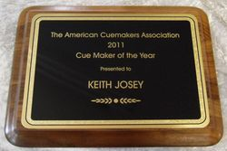

About Josey Cues
Keith Josey’s love of billiards, woodworking, and fine craftsmanship are a gift from his father, a skilled woodworker and custom homebuilder. It all began during his boyhood years, when Keith often helped out in his father’s woodworking shop. It was here, under the study of his father, that he learned both the skill of fine woodworking and a penchant for perfectionism. Similarly, at the close of many a working day, Keith, his father, and four brothers would play pool together at the local billiard hall. This fostered a deep enjoyment of the game that Keith maintains to this day. Keith's wife, Sherri, also grew up with a fondness of billiards because of their family home billiard table.
This deep enjoyment Keith shares with his wife Sherri, an essential partner in the business since its inception and a longtime billiard player in her own right. Growing up in Tampa, Florida, Sherri regularly battled her father Tom and brother John on the family room's eight-footer. When she and Keith began dating fifteen years ago, they became regular players at local pool halls on Savannah's southside, eventually forming a team, Josey's Cue Repair, to compete in weekly league play. Today, Sherri is an integral partner in Josey Custom Cues, managing the demands of the business so Keith has the freedom to work at his art without distraction.
Keith’s reputation as a fine craftsman spread quickly. Local players, impressed with the quality of his repairs, urged Keith to make his own cues. Therefore, with the support of many satisfied customers behind him, Keith began Josey Custom Cues in 1992. Over the years he has continued to make cues that exhibit exacting standards of form and function one at a time, by hand, in his one-man shop. Keith's wife Sherri also plays a pivotal role in the business by handling all of the book-keeping.
Certainly, quality and craftsmanship are an identifying trait of every hand-signed Josey Custom Cue. For example, with the exception of the tips, bumpers, and screws, Keith makes every component of his cues. All ferrules, collars, and butt caps thread on for more secure construction. Keith prefers a forward balanced cue with a solid stiff hit. He turns his shafts eight times over a six month period, dipping them in a wood stabilizer after each turning. To ensure against warpage, spliced cues often sit for a month or more. Importantly, in his quest to build the perfect playing cue, Keith began using a slimmer joint and butt diameter in 1994.
In addition to superior playabilty, Josey Custom Cues are a treat for the eye. In fact, Keith’s love of wood is very apparent when one closely examines a finished cue. Rare, beautifully patterned woods gleam under a painstakingly applied, mirror-like finish. Inlays, using precious materials such as mother of pearl, exotic woods, turquoise, and malachite, further decorate each Josey Cue in intricate one-of-a-kind designs. Taken as a whole, each cue represents the excellence of form and function that is the hallmark of Josey Custom Cues.
Currently, Keith specializes in custom cues making them based on a customer's specifications. Josey cues are guaranteed against construction defects that are not the result of warpage or abuse.
Thank you for visiting our site, I hope you enjoyed your stay. - Keith & Sherri
Recent Comments
Who We Are
Welcome and thank you for your interest in Josey Custom Cues.
Handcrafted for both the serious collector and the discerning player, all of our cues exhibit the beauty and fine craftsmanship which is our hallmark.
Keith has been building cues since 1992 and joined the American Cuemaker's Association in 1995. He has been on the Board of Directors for the American Cuemakers Association since 2000 and was named "Cue Maker of the Year in 2011"
History
- 1992-
Keith Josey starts Josey Custom Cues
- 1995-
Keith joined the American Cuemaker's Association
- 2000-
Keith Josey is appointed to the Board of Directors for the American Cuemakers Association
- 2011-
Keith Josey wins the Cue Maker of the Year award.
Why Choose Us
 Our Work
Our Work
Each handmade Josey cue is crafted to meet exacting standards of form and function to produce a cue with superior playability. Custom designs, using inlays such as Mother of Pearl, exotic woods, and precious stones, assure that each cue is a work of art.
Our Fans
We are proud to note that in addition to many loyal customers and collectors around the world; professional players in both the United States and Japan play with a Josey Custom Cue as well. Shawn Putnam, a pro player for over ten years, states Keith Josey is among "the nations top 10 cue makers as far as quality and workmanship."
Our History
Josey Cues has been around since 1994. We know what we are doing.


Scott A. Burns
Evan Bee
James Holly